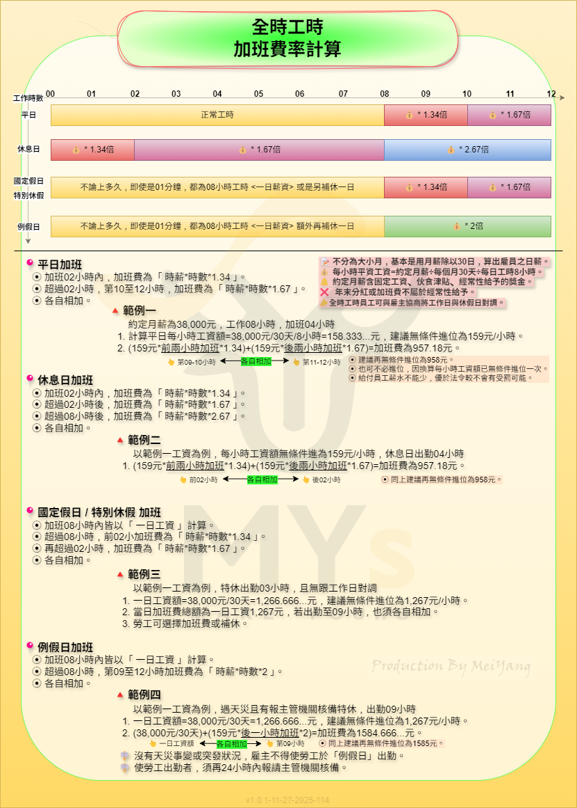

📝 勞資知識補給站
正兼職須知
勞動基準法
第30條﹑第30-1條
2025-05-20
四週變形工時
勞動基準法
第30條﹑第30-1條
2025-05-20
工時規範
勞動基準法
第30條﹑第35條﹑第36條
第32條第一項
2025-05-26
延長工時
勞動基準法
第24條﹑第32條﹑第37條
第40條﹑第42條
勞動基準法施行細則
第10條﹑第12條﹑第13條
2025-06-17
變形工時
- 『 實施規範 』
- 須符合「中央主管機關（勞動部）指定的行業」。
- 變形工時須經工會同意﹐如無工會者﹐則須經勞資會議同意。
- 將每個週期的排班表提前公告。
- 「排班表」須明確記載員工休假日﹑例假日及工作時間。
- 員工數若未達3人﹐僅需徵得所有員工同意即可實施變形工時。
- 分兩週﹑四週及八週變形工時。
- 『 實施行業 』
- 四週變形工時之排班方式最為普遍。
- 以下介紹以四週變形工時為例。
- 『 全時工時 』
- 不被「七休一」規則所限制﹐允許全職員工接連上班達12天。
- 時數 ▶ 每日工時最多10小時﹐每4週工時總計不超出160小時。
- 天數 ▶ 每雙週需有2天例假﹐每4週至少應有8天例假及休息日。
- 『 部分工時 』
- 一週內應安排兩天休假﹐一天例假日﹑另一天休息日。
- 同﹑跨週期不得連續上06天班。
- 若同﹑跨週期第06天班為休息日加班。

延長工時
- 『 加班定義及說明 』
- 雇主與員工約定加班﹐安排國定假日或特休出勤﹐都須事先獲得員工同意。
- 平日工作8小時內為法令規定之正常工作時間﹐08小時候後持續上班開始計算加班。
- 加班費計算應以用「分鐘」計算。
- 加班費計算基準應用「全薪」計算(月薪制)﹐勿用「底薪、本薪」計算。
- 加班不能強制換補休﹐優先給加班費﹐除非員工自願放棄領取加班費。
- 加班費用須用1.34或1.67做計算﹐建議再無條件進位﹐不低於勞基法標準。
- 休息日加班連續工作四小時也須提供給勞工至少半小時休息時間。
- 『 平日延長工作時間01~02小時內 』
- 即上班第09及10小時(扣除休息時間)。
- 加班費=每小時工資額*1.34倍*加班時數。
- 『 平日延長工作時間03~04小時內 』
- 即上班第11及12小時(扣除休息時間)。
- 加班費=每小時工資額*1.67倍*加班時數。
- 『 平日延長工作時間04小時以上 』
- 須因天災﹑事變或突發事件才可再延長。
- 加班費=平日每小時工資額*2倍*加班時數。
- 以上08~12小時當日加班費都為各自相加。
- 『 休息日加班 』
- 工作時間在2小時以內者﹐按平日每小時工資額*1.34倍*加班時數。
- 工作03~08小時後繼續工作者﹐按平日每小時工資額*1.67倍*加班時數。
- 工作09~12小時後繼續工作者﹐按平日每小時工資額*2.67倍*加班時數。
- 當日加班費以上各自相加。
- 休息日雖允許加班﹐但不得超過12小時。
- 『 例假日加班 』
- 依法只有在遭遇天災﹑事變或突發事件﹐才能例假日加班。
- 月薪制勞工加班在08小時內﹐無論實際工作多久都算8小時﹐統一給一日工資。
- 時薪制勞工說明可參考最下面圖示說明。
- 加班至第09~12小時﹐加班費以每小時工資額*2倍計算。
- 須多給一天補休。
- 當日加班費以上各自相加。
- 『 特休及國定假日加班 』
- 須徵得勞工同意﹐或是因季節性關係有趕工必要並經勞工或工會同意。
- 月薪制及時薪制勞工說明可參考最下面圖示說明。
- 加班至第09﹑10小時﹐按平日每小時工資額*1.34倍加班時數。
- 加班至第11﹑12小時﹐按平日每小時工資額*1.67倍*加班時數。
- 當日加班費以上各自相加。
- 『 備註 』
- 月薪制員工﹕工資/30(天數)/8(時數)﹐為每小時工資額。
- 月薪制員工工資額為經常性給予工資﹐如伙食津貼﹑經常給予之獎金...等。
- 加班每日不超過12小時﹐且每月不超過46小時。
- 若隔日有上班﹐須間隔11小時。
